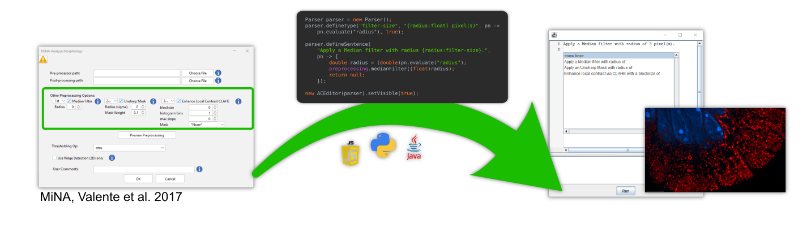

This is a simple page demonstrating an nlScript language for configuring an image pre-processing pipeline. This is just a proof of principal and does not contain any functionality, but demonstrates what such a language could look like.
Also check out the tutorial.
Often, a newly developed image processing algorithm (e.g. MiNA) requires low-level pre-processing, including e.g. noise removal, feature enhancement, filtering etc. The precise steps required depend on the image at hand and are unknown to the developers of the new algorithm, making it difficult to provide a traditional graphical user interface. Here, too, a natural-language interface inherently allows multiple pre-processing steps, to be combined in arbitrary order, even repeating individual steps with different parameters.

let parser = new nlScript.Parser();
parser.defineType("units", "pixel(s)", undefined);
parser.defineType("units", "\u{03bc}m", undefined);
parser.defineType("filter-size", "{stddev:float} {units:units}", undefined, true);
parser.defineSentence("Apply a Median filter with radius of {radius:filter-size}.", undefined);
parser.defineSentence("Apply an Unsharp Mask with radius of {radius:filter-size} and mask weight of {weight:float}.", undefined);
parser.defineSentence("Enhance local contrast via CLAHE with a blocksize of {block-size:int}, {bins:int} histogram bins and a max slope of {slope:int}, using {image:[a-z-]:+} as a mask.", undefined);
new nlScript.ACEditor(parser, document.getElementById("nls-container"));